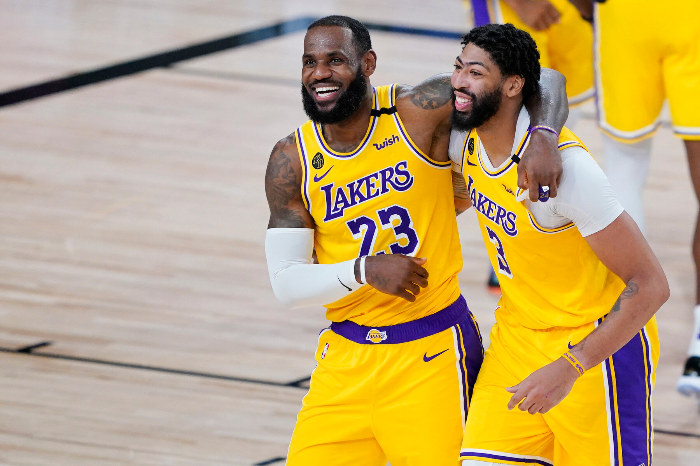

LeBron James, Anthony Davis sign up for Lakers’ bright future
Posted at Dec 04 2020 07:05 AM
The Los Angeles Lakers have secured a long-term future with their two most important players by agreeing to new contracts on successive days this week with Anthony Davis and LeBron James. The Lakers and Davis agreed on a five-year, $190 million maximum contract, Rich Paul of Klutch Sports, the agent for both Davis and James, said Thursday. On Wednesday, James and the Lakers agreed to a two-year maximum contract extension worth nearly $86 million, Paul said.
Davis, 27, became an unrestricted free agent after helping the Lakers win the franchise’s 17th championship in October, but he did not negotiate with any other team. After taking some time to consider a variety of contract lengths, Davis accepted the longest deal he could with Los Angeles. It includes a player option that grants him the right to return to free agency after the 2023-24 season.
James, who turns 36 later this month, also took the longest deal he could without invoking the NBA’s over-38 rule, which restricts older players from signing multiyear deals. He previously had a player option for the 2021-22 season, but is now under contract with the Lakers through the 2022-23 season — via the first contract extension he has signed with his incumbent team since he signed an extension with the Cleveland Cavaliers, who drafted him, in 2006.
Davis waited until after much of the league’s offseason business had been completed — and after James’ extension — to commit to the deal. Persuading him to sign a maximum-length contract, rather than a shorter-team deal that would have allowed him to return to free agency faster, caps a triumphant few weeks for the Lakers in the wake of their championship season in the NBA bubble at Walt Disney World near Orlando, Florida.
The Lakers appear to have demonstrably upgraded their roster by acquiring high-scoring guard Dennis Schroder via trade and signing the accomplished frontcourt duo of Montrezl Harrell and veteran center Marc Gasol in free agency. They also managed to re-sign a few key contributors — Kentavious Caldwell-Pope, Markieff Morris and Jared Dudley — to mitigate the departures of Rajon Rondo, Avery Bradley and Dwight Howard.
Jeanie Buss, the Lakers’ owner, and Rob Pelinka, the general manager, faced considerable criticism after James’ first season in Los Angeles, in 2018-19. That year, the Lakers extended their playoff drought to a franchise-record six consecutive seasons. Magic Johnson abruptly stepped down as team president in April 2019, and the Lakers’ attempts to hire Tyronn Lue as the head coach collapsed. But Buss and Pelinka rebounded in grand fashion, starting with the hiring of Frank Vogel as coach and the June 2019 trade with New Orleans to land Davis.
The Lakers, who are scheduled to hold their first group practice of the new season Sunday, will open as the league’s consensus favorites to win it all. The Lakers were not even the consensus favorites in their own city last season after the Los Angeles Clippers’ splashy acquisitions of Kawhi Leonard and Paul George. Davis averaged 27.7 points, 9.7 rebounds, 3.5 assists, 1.4 blocks and 1.2 steals in last season’s playoffs, raising his performance from a strong regular season in which he finished second to Milwaukee’s Giannis Antetokounmpo in the league’s defensive player of the year voting.
James this year became the first player to be the NBA Finals MVP with three different franchises, and he led the league in assists for the first time with 10.2 per game. The contract extension will take James’ career to an even 20 NBA seasons if he plays it out through 2022-23 — which is the same year his oldest son, Bronny, is expected to graduate from high school.
Related Stories